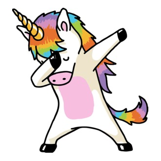

Üdvözöllek!
Ez az én teszt HTML oldalam.
Vakon gépelés megtanulásához.
Dualingo
English idioms that everyone should know:
Under the weather
The ball is in your court
Spill the beans
Break a leg
Other ways to say “I agree”
absolutely,
definitely,
exactly
sure

Kifejezés
Jelentése
Under the weather
feeling sick or unwell
Rajzolás a canvas-en